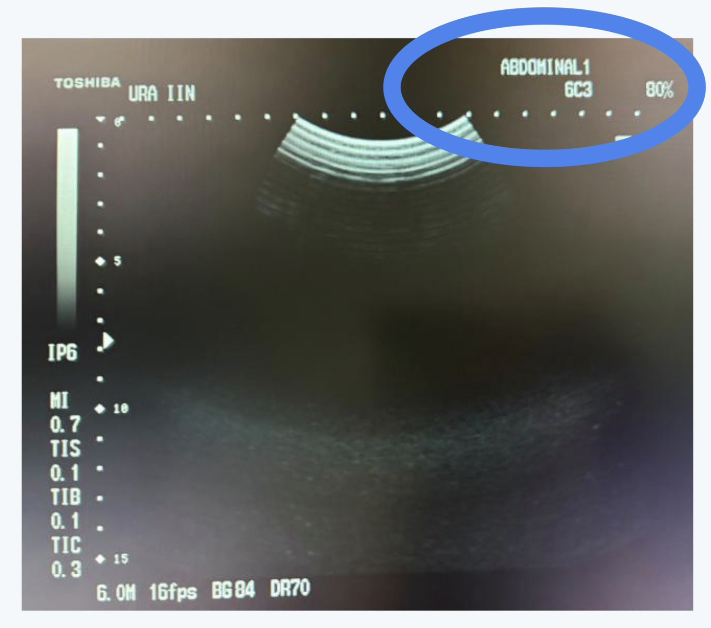
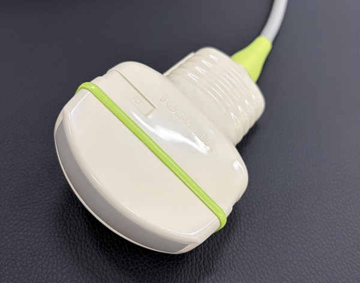
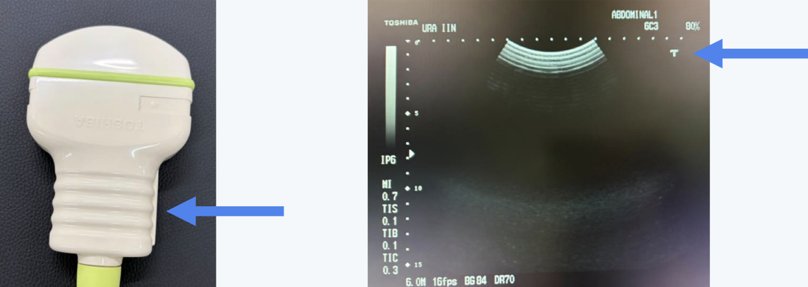
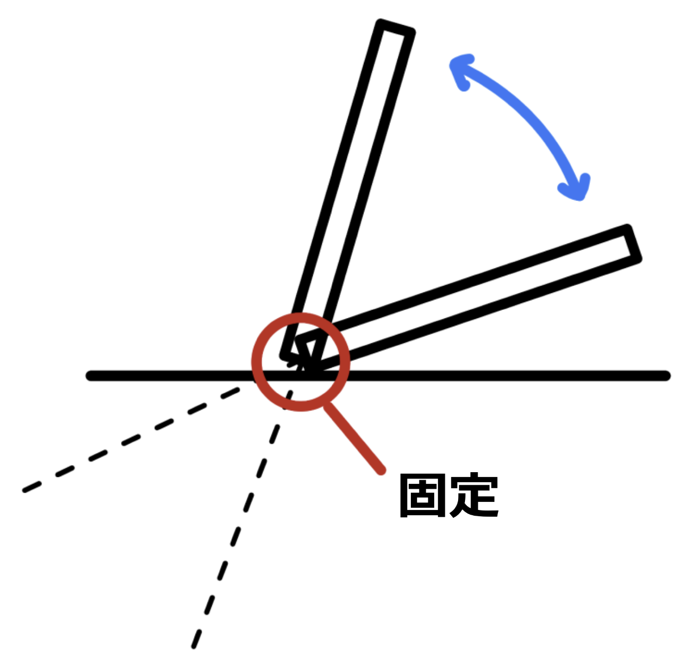
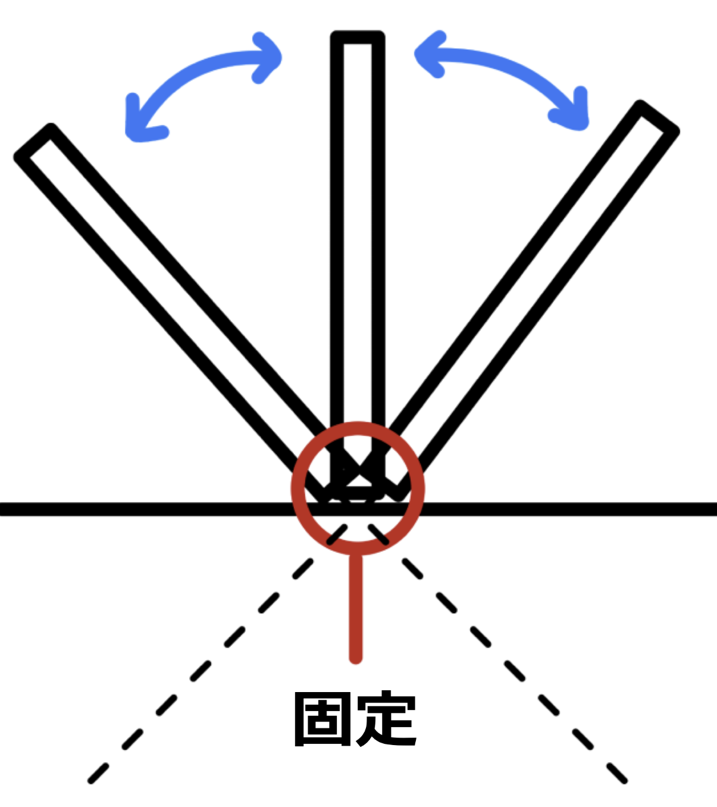

🤖 ソノボくん
まずは全体の流れを確認！7ステップで準備完了です。ミッション手順書を確認してください、キャプテン📋
MISSION PROTOCOL — FAST SETUP
①
コードを踏まないように運ぶ
機器破損・転倒リスクを回避
②
電源を入れる
③
プリセットを選択する
検査部位に最適化された設定を呼び出す
④
プローブを選ぶ
FASTにはコンベックス（扇型）プローブを使用
⑤
マーカーの向きを確認する
向きを間違えると画像が左右反転する！
⑥
ゼリーをたっぷり塗る！
⑦
患者さんの体勢を整える
仰臥位（仰向け）が基本。腕は上げてもらうと◎
患者さんと画面が同じ視野に入るよう座ることがポイント！目線の往復を最小化しよう。

🤖 ソノボくん
「プリセット」という言葉、聞いたことありますか？宇宙船のナビゲーション設定みたいなものです。超わかりやすく解説します🔍
💡
例）Abdominal、eFAST、Cardiac など
⚙
プリセットを選ぶと、深さ・周波数・ゲイン（明るさ）などが自動調整される

画面右上に「ABDOMINAL1」と表示されているのがプリセット名
FASTでは 「Abdominal」や「eFAST」プリセットを選択しよう！ ※単に「腹部」表記の場合もある。

🤖 ソノボくん
プローブはエコーの「センサー」部分！FASTで使う形を覚えておくのがこのセクションの目標です。

コンベックス型プローブ（扇型の超音波を発する）
🔊
コンベックス型は扇状に超音波を発する
🫀
腹部の広範囲、深部を一度に観察できる
🔒
リニア型（平型）はFASTには使わない
⚡ MISSION QUIZ #1
❓ FASTで使うプローブはどれ？

🤖 ソノボくん
⚠️ 重要警告！マーカーの向きを間違えると画像が左右反転してしまいます。宇宙船のコンパスと同じくらい大切な情報です！

マーカーと画面上のマークが対応している
📺
画面上のマーク（この画像ではT）がマーカー側に対応している
📌
今回はアプリ内の画像と同じ向きになるように当ててくれたら大丈夫！
⚠️
必ず当てる前に確認！
向きを間違えたまま進めると、臓器の位置関係が逆に映り、誤った判断につながる可能性がある
🤖 ソノボくん
ゼリーはケチらないで！たっぷり使うことが画像の質に直結します。なぜか一緒に見てみましょう💧
💧
超音波は空気をほとんど通過できない
🔬
ゼリーが少ないと→ 空気層ができる→画像が途切れる
✅
迷ったら多めに！余分なゼリーは拭けば良い
⚡ MISSION QUIZ #2
❓ ゼリーが不足するとどうなる？
🤖 ソノボくん
「扇動（せんどう）操作」は、FASTで最も重要なプローブ操作テクニック！先端を固定して上部を前後に動かします🌀
🔄 扇動操作のアニメーション
先端を固定 → 上部を前後に傾ける

心窩部での扇動操作

側胸部で使う扇動
⚠️
評価が終わるまで、必ず扇動操作で全体を確認すること！
1カ所でフリーズして判断すると、少量の液体を見逃す可能性がある
⚡ MISSION QUIZ #3
❓ 扇動操作で固定するのはどこ？